England & Scotland
July 2001

In July 2001 I traveled through England and Scotland.
Stops included a coastal castle, Roman Vindolanda, the Roman Baths and Bath Abbey, Stonehenge, Highland roads, the Wallace Monument at Stirling, and London — Parliament, Trafalgar Square, Tower Bridge, and the London Eye.


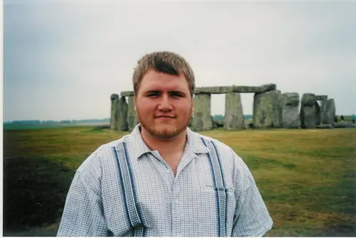

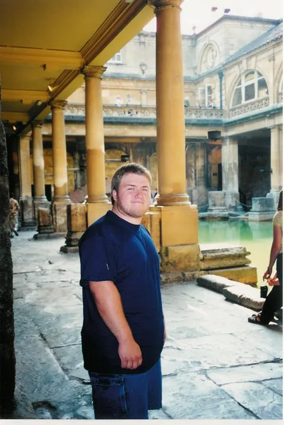

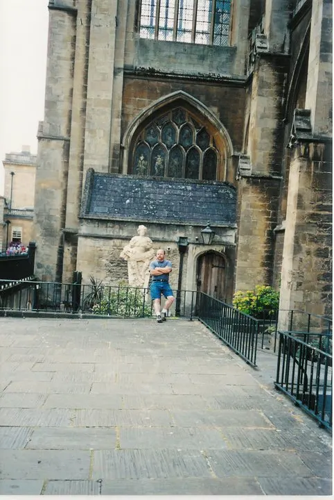

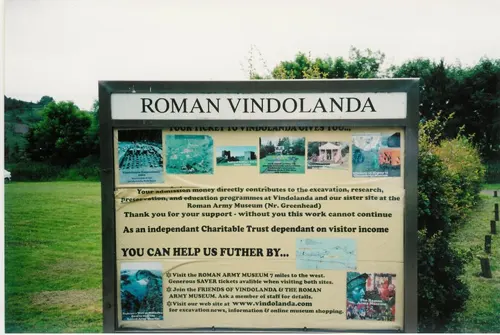

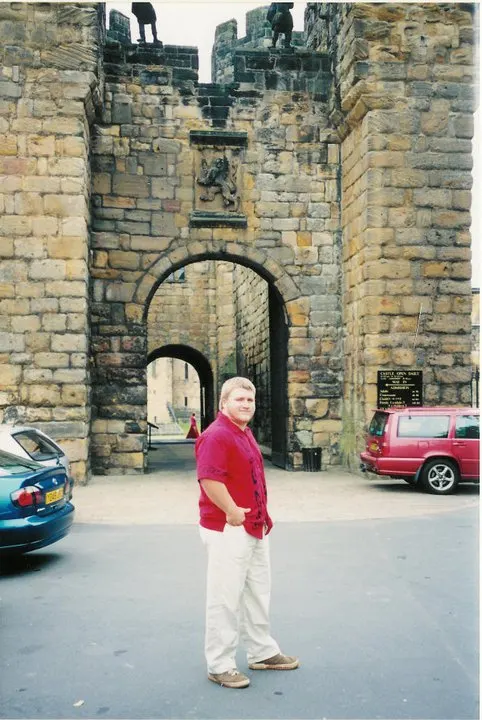

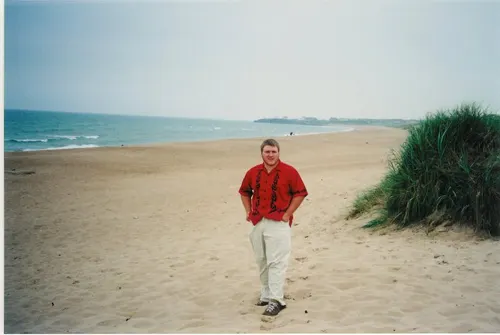

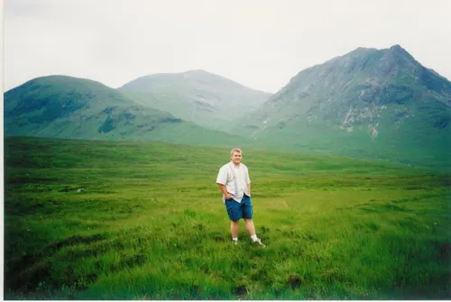

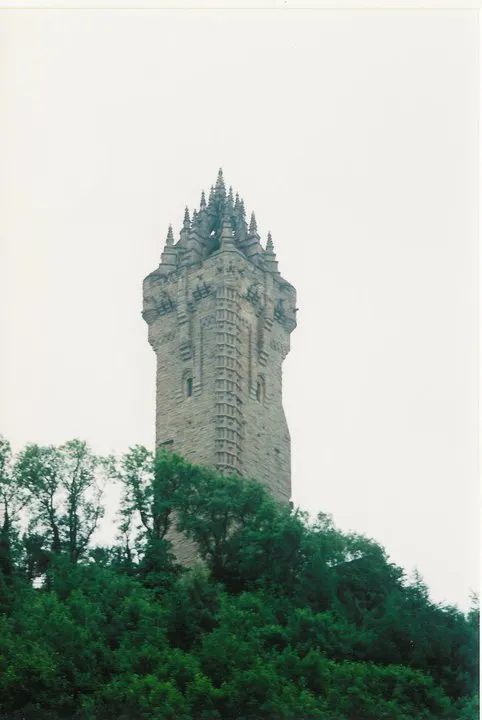

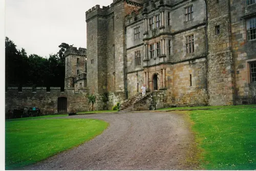

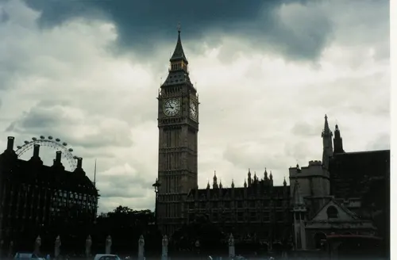

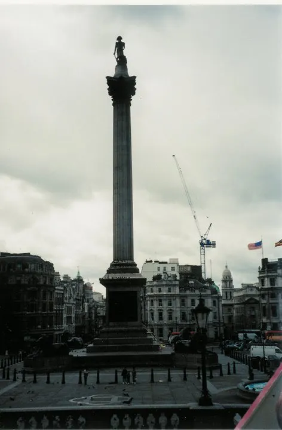

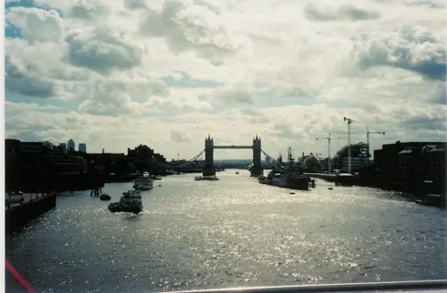

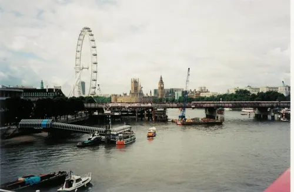